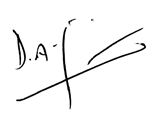

I am deeply honoured to serve as Group Chief Executive Officer of the largest integrated communications services Company in Sri Lanka. We are committed to being the lead partner in the journey of the country’s fast-track towards regional ICT supremacy.
The pace of change in the market has increased as the telecommunication, IT and media industries converge into a broader ICT infrastructure. At the same time, ICT has begun to spur the productivity in other sectors of the economy. In such a milieu, we are committed to establishing the communication backbone of Sri Lanka, which in turn would fuel the foundation for virtually all other economic sectors. Hence, our strategic focus remains strongly aligned to the nation’s vision of realising a digital economy.
Combining our business expertise of over 150 years and the skills of our team, we will continue to strengthen our technology leadership and harness the full potential of broadband connectivity. Combining best-in-class margins with strong operating cash flows we will grow at a faster pace in 2015. In doing so while we aim to drive value to our shareholders and customers, our employees remain an integral part of our growth. Our customers will be offered ultimate convenience and connectivity at all times by combining best-in-class global service standards and Group synergies. In addition, our business value chain will be enhanced to increase customer and employee satisfaction. We will also pay more emphasis to key drivers of the economy and continue to pioneer technology and uplift communities around us.
I am confident that we will continue to evolve and strengthen overtime to meet new challenges and remain the market leader in the country’s ICT landscape.
Dileepa Wijesundera
Group Chief Executive Officer
Combining our business expertise of over 150 years and the skills of our team, we will continue to strengthen our technology leadership and harness the full potential of broadband connectivity.